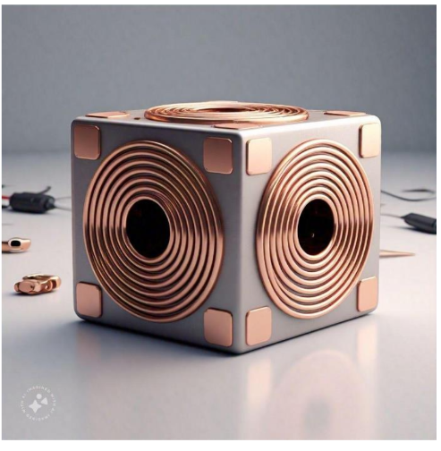
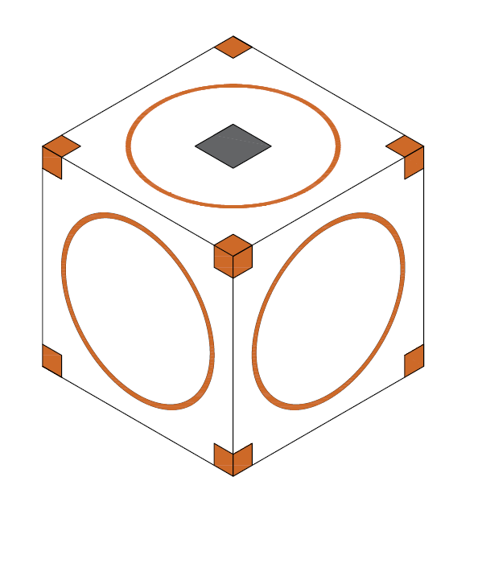
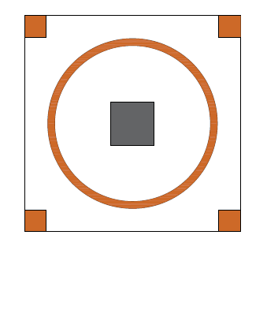
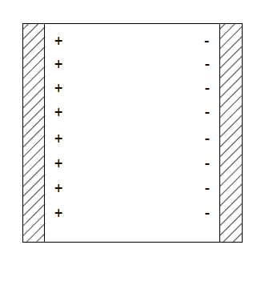

Microbots - Self-Assembling Cubic Micro-Robots
Introduction
Microbots is a theoretical concept for autonomous, microscopic cubic robots that can move on command, communicate with one another, share energy, and bond electromagnetically to assemble into dynamic three-dimensional structures.
I originally conceived the foundation of this idea during 12th grade in high school, driven by the desire to make something similar and useful to things shown in Sci-Fi movies. Rather than relying on rigid, pre-assembled machinery, this project explores a idea inwhich millions of microscopic building blocks(called as microbots) act together to be useful, reconfiguring their physical geometry to form any object, mechanism, or structure on demand.
Inspiration
Growing up, I was deeply captivated by science fiction. One of the biggest creative catalysts for this project was Disney's Big Hero 6, specifically Hiro Hamada's microbots swarm robots, I was trying to create something similar, something small yet capable to bond with others, communicate with others send data or energy when required.
While sci-fi displays micro-robotics effortlessly, making it physically viable requires dealing with steep real-world challenges: extreme electromagnetic force decay at micro scales, severe Joule heating in microscopic coils, energy requirements issues and figuring out how to power such small robots.
Technical Details & Approach
The Design Journey: Why the Cube?
My first design was an elongated diamond with rounded edges that resembled something like a smooth cylinder. However, early geometric analysis forced me to scrap this design it for three reasons: it offered at most two connection joints, it was very difficult to organize into dense 3D volumes, and its asymmetry made microscopic lithography impractical.
To build true programmable matter, i needed a geometry that had most axis of symettry, enough area for the coils placement and something that was fundamentally stable when used to build structures, then few days later in bathroom I had my eureka moment, with 6 faces (bonding sites), area sufficient for coils placement and a design that was much stable than the diamond design, I realised a cube was the perfect answer I was looking for.
Core Architecture & Anatomy
Each microbot is a microscopic cube (engineered around 100 µm to 500 µm in size) consisting of four integrated subsystems:
- Face-Mounted Electromagnetic Coils (6 Faces): A planar circular copper coil is fabricated onto each face. These coils serve a dual purpose: passing controllable current produces a magnetic dipole to attract, repel, and move adjacent bots, while coils that are not used for bonding, wirelessly harvest ambient power from an external oscillating magnetic field.
- Edge Communication & Power Pads: Four conductive copper contact pads sit on the edges and corners of each face. When bots latch together, these pads form an electrical bus that transmits commands across the swarm and routes energy from exterior bots to central bots which require more energy to support high structural loads.
- Internal Supercapacitor Energy Buffer: Instead of chemical batteries, an internal electrostatic storage element buffers energy harvested from the environment for high-current actuation bursts.
- On-Board Micro-Controller: A microscopic CMOS logic circuit or microcontroller etched into the core coordinates local timing, communication packets, and coil polarities. When linked together, the swarm can operate as a massively distributed computing processor.

Figure: Isometric 3D view showing cubic bonding geometry and face coils.

Figure: Front face view detailing planar coil layout and edge contact pads.
Powering the Swarm: Dual-Plexing
At the micro-scale, conventional chemical batteries are completely impractical due to volume constraints, weight, and cycle degradation. Microbots carry no internal batteries. Instead, they operate completely battery-free by drawing energy from an external oscillating magnetic field via electromagnetic induction.
To prevent interference between power reception and mechanical bonding, the system uses a synchronized control strategy called dual-plexing(this is still very imature and needs further development):
- For most structure lets say a triangular plate made by these microbots, It is not necessary every bot has to participate in structure formation. microbots use turn based mechanism, first a group of few bots disengage their actuation to harvest energy, while the other bots hold the structure together, then the bots swap, In this way bots act in unison to keep the structure stable, and as for bots that are in critical positions that they cannot disengage their actuation, other bots can simply supply their energy to these bots via communication pads.
Overcoming Energy Limits: The Supercapacitor Breakthrough
In my initial design version, I calculated the energy storage of a conventional parallel-plate capacitor with high-permittivity barium titanate (BaTiO3, εr = 10,000). At microscopic dimensions (0.5 mm cube), the capacitance was just 44.25 pF. Even assuming an extreme voltage of 200 V—which I think will certainly cause electric arcing and dielectric breakdown at this scale—the stored energy was only ~885 nJ, which is far too low to power actuation coils.

Figure: Internal parallel-plate capacitor architecture modeled in the initial design version.
To solve this critical bottleneck, I upgraded the internal storage model to porous activated-carbon supercapacitor technology (electric double-layer capacitor). With porous carbon electrodes offering huge surface areas (~100–200 F/g):
This increases stored energy by over 4,000× (from nanojoules to 4.56 mJ) while operating at a safe, realistic voltage of just 2.7 V, completely eliminating the need for high-voltage hazards and making electromagnetic actuation physically viable, This was the second breakthrough I made in this project.
Preliminary Feasibility Numbers
| Physical Parameter | Calculated Value | Engineering Significance |
|---|---|---|
| Cube Edge & Mass | 100 µm edge, ~8.96 µg | Microscopic scale with negligible gravitational inertia |
| Coil Resistance | ~75.3 mΩ | Low resistive loss through optimized conductor cross-section |
| Thermal Current Limit | 62.7 mA (at 0.1 s pulse) | Constrained to a safe ΔT of 10°C to prevent thermal breakdown |
| Coil Core Magnetic Field | ~1.2 × 10−3 T (1.2 mT) | Localized field generated per activated face |
| Attractive Force (at 20 µm) | ~1.25 × 10−10 N | Produces an acceleration of ~1.4 m/s², enabling deliberate motion |
| Supercapacitor Energy | ~4.56 mJ (at 2.7 V) | High energy density buffer for longer actuation pulses |
Potential Applications
Because microbots act as modular building blocks, the range of potential applications spans several sectors:
- Medical Nanorobotics: Targeted micro-scale drug delivery to diseased cells, non-invasive biopsies, and microsurgical intervention through capillary pathways without open incisions.
- Environmental Remediation: Dispersible swarms for breaking down micro-pollutants and targeted oil spill absorption in marine environments.
- Precision Micro-Manufacturing: High-precision pick-and-place assembly of micro-optics and semiconductor packages beyond traditional robotic reach.
- Dynamic Programmable Matter: Reconfigurable tools and rapid prototyping where material geometry adapts in real time to mechanical demands.